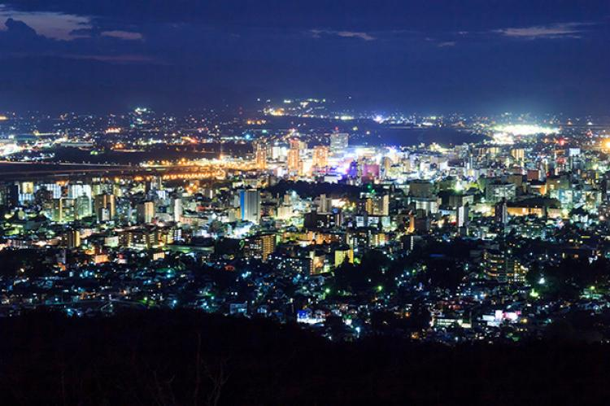
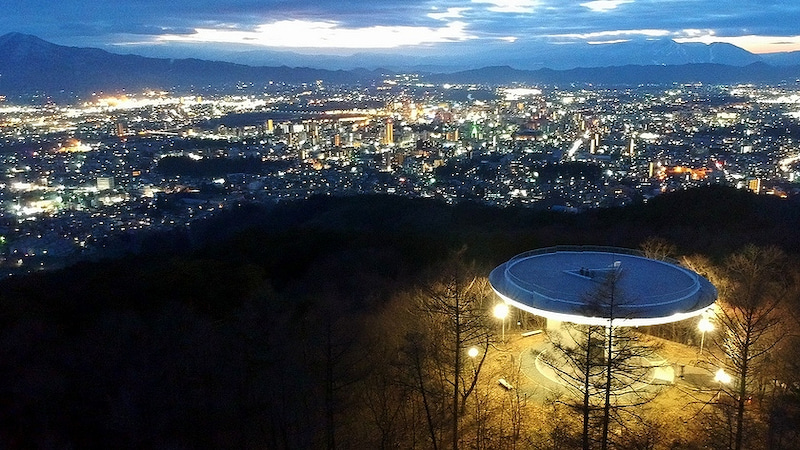

岩山展望台


岩山展望台標高約３４０メートルの頂上にあ
り、市街地はもちろん、岩手産や八幡平を含
む奥羽山系から北上山系まで一望でき迫力満
点です。日中に見える景色はもちろん、なん
といっても夜景がとても綺麗で大変おすすめ
です。ただし、夜間は街灯が少ないため足元
にお気をつけください
| 所在地 | 岩手県盛岡市新庄岩山15 |
|---|---|
| 電話番号 | 019-651-4111 |
| 定休日 | 年中無休 |
| 営業時間 | 24時間 |
| 料金 | 見学自由 |
[アクセス経路]
ルート： 盛岡南IC → 【車30分】 岩山展望台